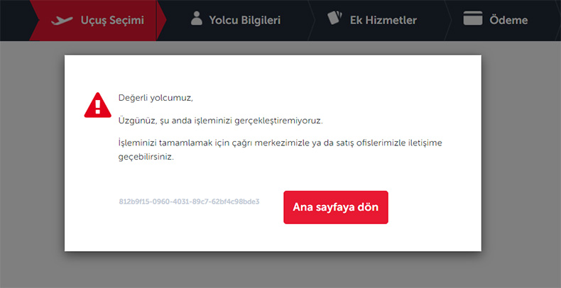

Detaylar için aşağı kaydırabilirsin!
Türk Hava Yolları'nın online bilet satış ve check-in işlemlerinin yapıldığı sistem başta olmak üzere network altyapısı çöktü. Sistemdeki arıza nedeniyle hiçbir işlemin yapılamadığı öğrenilirken, arızanın giderilmesi için yoğun çaba sarfedildiği bildirildi. THY'deki IT uzmanlarının sorunun neden kaynakladığını araştırdığı ve çözüm için çalışmaların devam ettiği öğrenildi. THY tarafından konuyla ilgili yapılan açıklamada, "Network altyapısında yaşanan sorunlar nedeniyle biletleme ve rezervasyon işlemlerinde aksamalar yaşanmaktadır.
Sorunun giderilmesi ve yolcularımızın mağdur olmaması adına gerekli çalışmalar yapılmaktadır .Söz konusu aksaklık için özür dileriz. 30 dk sonra sizlere durum hakkında bilgi vereceğiz." ifadeleri kullanıldı.
Sisteme giriş yapan kullanıcıların karşısına aşağıdaki bildirim çıkıyor.
Ayrıca Buraya tıklayarak Türk Hava Yolları'nın rezervasyon ekranına ulaşabilirsin!
